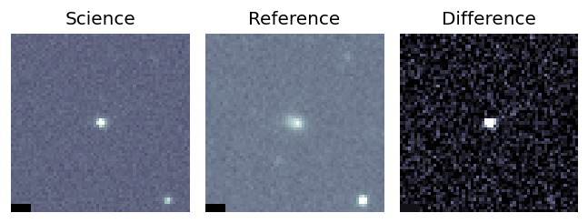
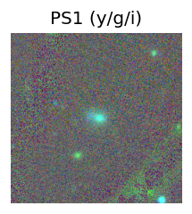
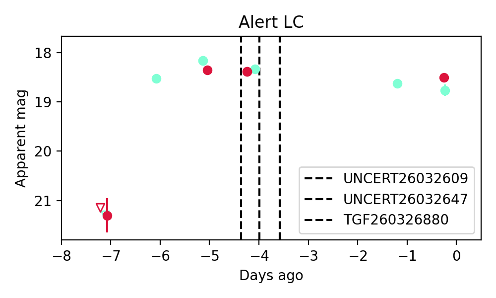
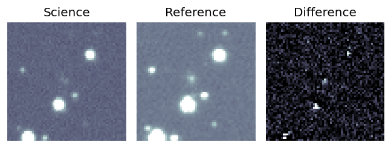
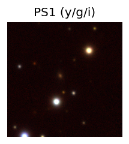
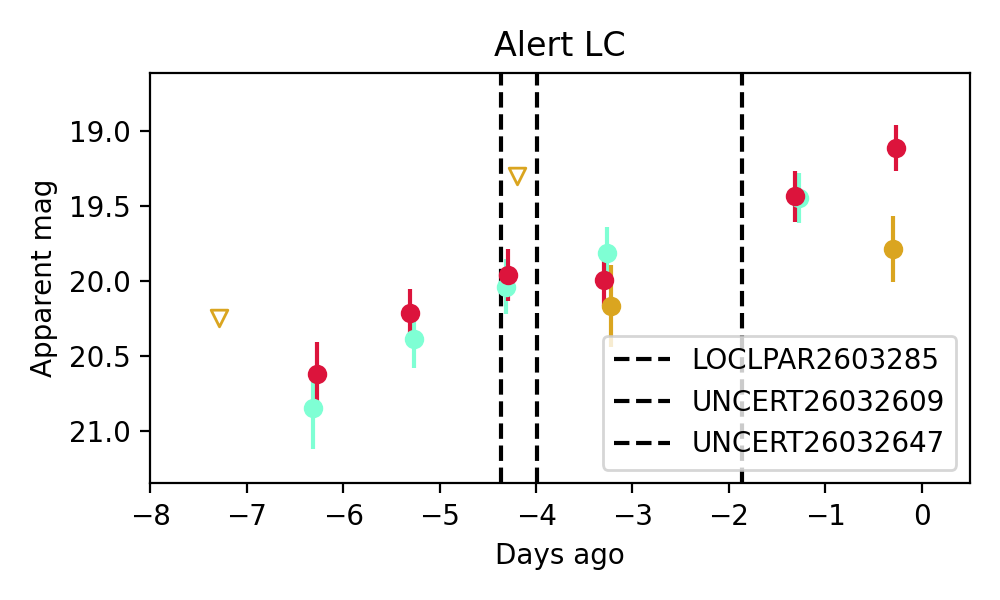
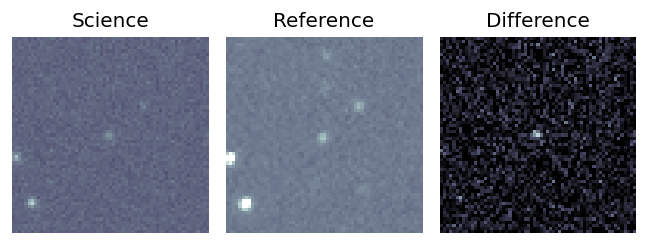
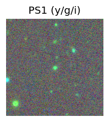
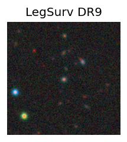
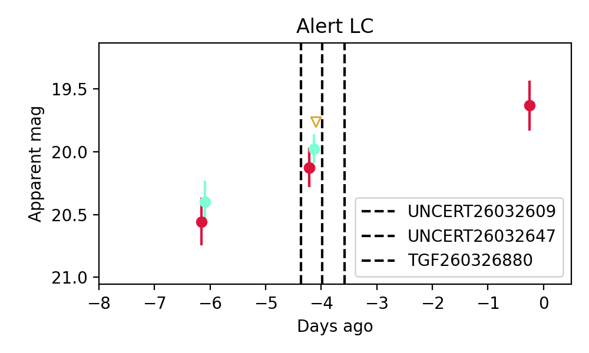

Candidate List 20260330 Previous Day Next Day Section 1: New Sources (age<1d) Cosmological Afterglow
Section 2: Old (1-5d) sources observed last night placeholder
Section 1: New Afterglow/FBOT Cands Last Night (0)
Section 2: Older Sources Observed Last Night (7)
0. ZTF26aapggcr (Afterglow?) [Back to Top] [Share] [Trigger Swift] [Fritz ] [Lasair ]RA, Dec: 176.14368, 52.18143 11h44m34.48s, 52d10m53.15sGalactic (l, b): 144.98833, 61.98874 ext(g-r) = 0.022

peak abs mag = -19.00 peak abs mag = -17.76 LegacySurvey: 1 sources in 3 arcsec Closest: d = 0.51 arcsec, 236.6 deg (east of north) photoz=0.03 (68% bounds 0.01, 0.04), type=SER peak abs mag = -17.26 (68% bounds -15.46, -18.26) 
Consistent with synchrotron, g-r>0!
1. ZTF26aapgvkd (FBOT?) [Back to Top] [Share] [Trigger Swift] [Fritz ] [Lasair ]RA, Dec: 231.2836, 13.34003 15h25m8.06s, 13d20m24.10sGalactic (l, b): 19.69478, 51.59515 ext(g-r) = 0.051peak abs mag = -24.98 LegacySurvey: 1 sources in 3 arcsec Closest: d = 0.19 arcsec, 50.2 deg (east of north) photoz=0.12 (68% bounds 0.07, 0.39), type=EXP peak abs mag = -21.48 (68% bounds -20.37, -24.34)
2. ZTF26aappgzc (FBOT?) [Back to Top] [Share] [Trigger Swift] [Fritz ] [Lasair ]RA, Dec: 165.72679, 51.48806 11h 2m54.43s, 51d29m17.02sGalactic (l, b): 155.55104, 58.21033 ext(g-r) = 0.012peak abs mag = -19.14 LegacySurvey: 1 sources in 3 arcsec Closest: d = 1.13 arcsec, 259.9 deg (east of north) photoz=0.09 (68% bounds 0.06, 0.12), type=EXP peak abs mag = -19.49 (68% bounds -18.71, -20.23)
3. ZTF26aapunzq (Afterglow?) [Back to Top] [Share] [Trigger Swift] [Fritz ] [Lasair ]RA, Dec: 111.55101, 1.30566 7h26m12.24s, 1d18m20.39sGalactic (l, b): 215.74781, 8.32834 ext(g-r) = 0.215
4. ZTF26aapuodi (FBOT?) [Back to Top] [Share] [Trigger Swift] [Fritz ] [Lasair ]RA, Dec: 113.85466, -0.94098 7h35m25.12s, 0d-56m-27.55sGalactic (l, b): 218.84019, 9.33653 ext(g-r) = 0.125

PS1: 1 source in 3 arcsec Closest: d = 2.46 arcsec photoz=0.13+/-0.02 peak abs mag = -20.14 
Consistent with synchrotron, g-r>0!
5. ZTF26aapuqvh (FBOT?) [Back to Top] [Share] [Trigger Swift] [Fritz ] [Lasair ]RA, Dec: 128.52773, -13.95028 8h34m6.66s, -13d-57m-0.99sGalactic (l, b): 237.84317, 15.31991 ext(g-r) = 0.061PS1: 1 source in 3 arcsec Closest: d = 0.65 arcsec photoz=0.13+/-0.04 peak abs mag = -21.11
6. ZTF26aapwagx (FBOT?) [Back to Top] [Share] [Trigger Swift] [Fritz ] [Lasair ]RA, Dec: 160.73444, 37.86962 10h42m56.27s, 37d52m10.64sGalactic (l, b): 183.02134, 61.03414 ext(g-r) = 0.015


peak abs mag = -22.35 LegacySurvey: 1 sources in 3 arcsec Closest: d = 0.83 arcsec, 189.3 deg (east of north) photoz=0.22 (68% bounds 0.17, 0.28), type=REX peak abs mag = -20.64 (68% bounds -20.05, -21.24) 